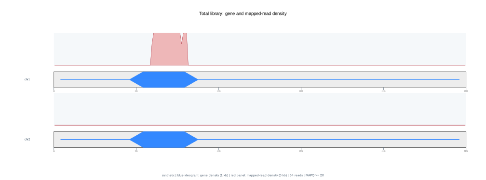
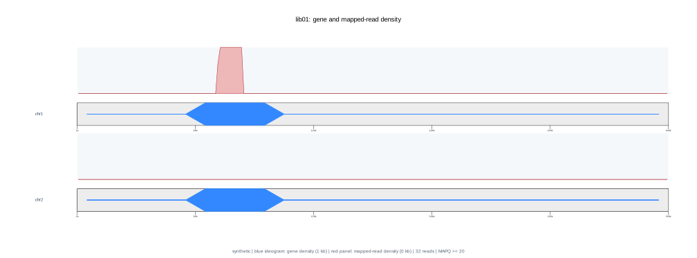
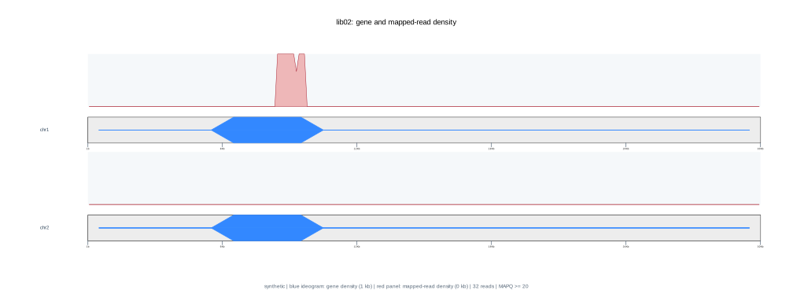
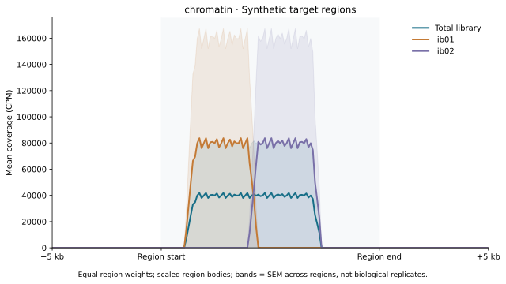

Shallow sequencing · whole-molecule library assessment
| Metric | Reference interval | Total library | lib01 | lib02 |
|---|---|---|---|---|
| Raw reads ⓘ | ≥500 | 64 | 32 | 32 |
| ONT sequencing QC ⓘ | Local yield screen | inconclusive_low_yield | inconclusive_low_yield | inconclusive_low_yield |
| Mean read Q ⓘ | Chemistry-specific | 40 | 40 | 40 |
| Raw median length ⓘ | Library-dependent | 346 bp | 346 bp | 346 bp |
| Raw read N50 ⓘ | Library-dependent | 346 bp | 346 bp | 346 bp |
| Inner-anchor reconstruction rate ⓘ | 50.0%–100.0% | 100.0% | 50.0% | 50.0% |
| Library | i5 (P5 side) | i7 (P7 side) | Support |
|---|---|---|---|
| lib01 | ACGTACGT | TGCATGCA | 50.0% |
| lib02 | GATCTAGC | CTAGATCG | 50.0% |
truseqPhysical i5 on the P5 side and i7 on the P7 side; sequences are normalized to P5→P7 orientation.
| Metric | Reference interval | Total library | lib01 | lib02 |
|---|---|---|---|---|
| Sublibrary share of all units ⓘ | Expected pooling ratio | 100.0% | 50.0% | 50.0% |
| Adapter-dimer QC ⓘ | ≥20 units; see burden | pass | pass | pass |
| Adapter-dimer burden ⓘ | 0.0%–5.0% | 0.0% | 0.0% | 0.0% |
| Insert median length ⓘ | Target / protocol-specific | 210 bp | 210 bp | 210 bp |
| Both outer handles detected ⓘ | Both P5 and P7 expected | 100.0% | 100.0% | 100.0% |
| All-unit index assignment ⓘ | Prefer high assignment | 100.0% | Sample-level | Sample-level |
| Primary-alignment rate ⓘ | 50.0%–100.0% | 100.0% | 100.0% | 100.0% |
| Mappable units ⓘ | Depth-dependent | 64 | 32 | 32 |
| Metric | Reference interval | Total library | lib01 | lib02 |
|---|---|---|---|---|
| Units with both outer handles ⓘ | Depth-dependent | 64 | 32 | 32 |
| Ambiguous index fraction ⓘ | Prefer 0% | 0.0% | Not attributable | Not attributable |
| Unassigned index fraction ⓘ | Prefer 0% | 0.0% | Not attributable | Not attributable |
| Unresolved dimer candidates ⓘ | Prefer 0; assess fraction | 0 | Not attributable | Not attributable |
| Reconstructed-unit dimer rate ⓘ | Prefer 0% | 0.0% | 0.0% | 0.0% |
| Concatemer rate ⓘ | Preparation-dependent | 0.0% | 0.0% | 0.0% |
| Library units ⓘ | Depth-dependent | 64 | 32 | 32 |
| Units per complete read ⓘ | ≥1 by definition | 1 | 1 | 1 |
| Canonical adapter dimers ⓘ | Prefer 0; assess fraction | 0 | 0 | 0 |
| Structure-matched adapter dimers ⓘ | Prefer 0; assess fraction | 0 | 0 | 0 |
| Raw structure-dimer rate ⓘ | Prefer 0% | 0.0% | 0.0% | 0.0% |
Hover a reference value for its basis. Numeric colored ranges are local screening settings unless stated otherwise. Biological expectations, statistical baselines and design objectives provide context and do not introduce new pass/fail thresholds.
Adapter dimers. Illumina recommends ≤0.5% for patterned flow cells and ≤5% for non-patterned flow cells, assessed relative to the full library by trace/electropherogram analysis. These percentages are not calibrated equivalents of ONT raw-molecule dimer burden. Illumina: adapter dimers.
Library handles. Both P5 and P7 are required for cluster formation; observed ONT handle recovery also depends on sequencing and reconstruction. Illumina: library quantification.
Fragment sizes. CUT&RUN has target-dependent short and nucleosomal components. Micro-C MNase titration evaluates approximately 150-bp nucleosomal DNA and longer products before ligation. Neither provides a universal acceptable insert median or a calibrated threshold for the inferred fragments in this report. Skene & Henikoff, 2017; Mapping Mammalian 3D Genome Interactions with Micro-C-XL.
The 120–170 bp raw-size window is supportive only. Dimer-like units have a ≤10-bp central gap. Unreconstructed template matches remain candidates; resolved 11–50 bp inserts are retained. Full-library sizes include expected outer adapters and inferred physical indexes, including units with undetected outer handles. The main profile weights each recovered unit by its modeled full-library length; count-based profiles are expandable. Curves are conditional on sequencing and adapter recovery and do not measure TapeStation fluorescence or NGS molarity.
Full library = insert + 136 bp adapter/index sequence. 64 modeled units. The main curve weights each unit by its full-library length.
Download both profiles · Modeled unit lengths · Model details
Each recovered unit contributes one count to the full-library and insert profiles; each raw read contributes one count to the raw profile. Each curve has its own peak set to 100.
Inspect broad coverage imbalance and isolated concentration. Gene density and shallow coverage alone cannot establish target-specific enrichment or copy-number changes.

Full library = insert + 136 bp adapter/index sequence. 32 modeled units. The main curve weights each unit by its full-library length.
Download both profiles · Modeled unit lengths · Model details
Each recovered unit contributes one count to the full-library and insert profiles; each raw read contributes one count to the raw profile. Each curve has its own peak set to 100.
Inspect broad coverage imbalance and isolated concentration. Gene density and shallow coverage alone cannot establish target-specific enrichment or copy-number changes.

Full library = insert + 136 bp adapter/index sequence. 32 modeled units. The main curve weights each unit by its full-library length.
Download both profiles · Modeled unit lengths · Model details
Each recovered unit contributes one count to the full-library and insert profiles; each raw read contributes one count to the raw profile. Each curve has its own peak set to 100.
Inspect broad coverage imbalance and isolated concentration. Gene density and shallow coverage alone cannot establish target-specific enrichment or copy-number changes.

| Metric | Reference interval | Total library | lib01 | lib02 |
|---|---|---|---|---|
| Collision O/E (depth normalized) ⓘ | 1 = uniform-null baseline | 6 | 6 | 6 |
| Contributing ONT molecules ⓘ | Evidence count | 64 | 32 | 32 |
| Usable fragments ⓘ | Depth-dependent | 64 | 32 | 32 |
| Usable fragment rate ⓘ | 30.0%–100.0% | 100.0% | 100.0% | 100.0% |
| Mitochondrial fraction ⓘ | 0.0%–20.0% | 0.0% | 0.0% | 0.0% |
| Mycoplasma signal screen ⓘ | NOT_DETECTED | NOT_CONFIGURED | NOT_CONFIGURED | NOT_CONFIGURED |
| Mycoplasma-screened inserts ⓘ | Depth-dependent | NOT_CONFIGURED | NOT_CONFIGURED | NOT_CONFIGURED |
| Mycoplasma-supporting reads ⓘ | 0 | NOT_CONFIGURED | NOT_CONFIGURED | NOT_CONFIGURED |
| Mycoplasma-supporting loci ⓘ | 0 | NOT_CONFIGURED | NOT_CONFIGURED | NOT_CONFIGURED |
| Mycoplasma signal fraction ⓘ | 0% | NOT_CONFIGURED | NOT_CONFIGURED | NOT_CONFIGURED |
Chromatin enrichment is not classified. Collision O/E is depth normalized (random baseline 1). Sampling uncertainty remains at low depth. TSS–TES profiles are CPM normalized and visual only.
Synthetic target regions · 2 regions · synthetic

BED · Profile data · PDF
Choose a BED file for synthetic. The profile is calculated locally in this browser.
BED uses zero-based, half-open coordinates. BED6 minus strands are reversed; BED3/4 and dot strands use genomic orientation. Bodies scale to 100 bins with 50 bins across each 5 kb flank. Exact aligned-base coverage (CIGAR M/= /X only; D/N excluded) is divided by each bin's available genomic width, then CPM uses all eligible primary nuclear alignments in the selected scope. Regions are equally weighted. Duplicate intervals are removed; non-primary and absent-contig regions are skipped and counted. Flanks are clipped to chromosome boundaries; bins entirely beyond the chromosome are missing. SEM is across regions. Assembly identity must be confirmed; chromosome names alone cannot verify it. No data are uploaded to a server.